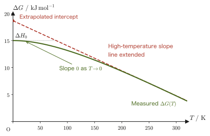
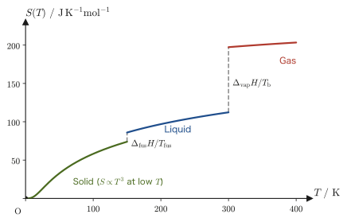
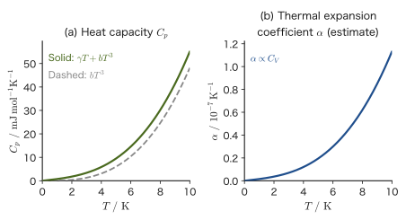
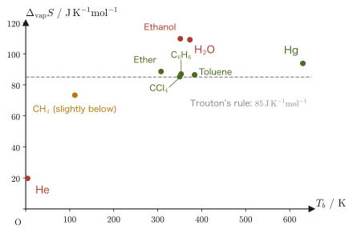
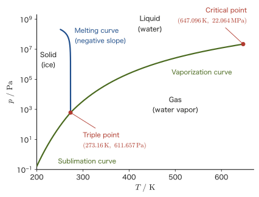

Chapter 32The Third Law of Thermodynamics and Rules for Phase Transitions
A refrigerator can cool its interior. An air conditioner can cool a room, too. Then, if we keep refining cooling technology without limit, can we, in theory, reach absolute zero, $0\ \mathrm{K}=-273.15\ \mathrm{°C}$? (Absolute zero is the temperature at which thermal motion classically ceases; in quantum mechanics, zero-point vibration remains. It is the origin of the absolute temperature scale that we learned about in Chapter 23.)
From the end of the 19th century to the beginning of the 20th, chemists and physicists were in fact pursuing a slightly different question—“what ultimately happens to the change $\Delta G$ in the Gibbs energy (Gibbs free energy), which determines the direction in which a chemical reaction proceeds, as the temperature is lowered?” As this simple question was pushed to its limit by experiment, the third law of thermodynamics, which stands alongside the first and second laws of thermodynamics and states that “absolute zero itself can never be reached,” unexpectedly came into view.
In this chapter, we first take as our tool the total differential $\dd G=-S\,\dd T+V\,\dd p$ of the Gibbs energy $G=H-TS$, established in the previous chapter (Chapter 31), and reconstruct, in modern notation, the historical path along which Nernst's theorem was discovered. Taking the conclusion obtained there—“$\Delta S\to0$ as $T\to0$”—as our starting point, we derive a consequence that has also been confirmed by experiment: both the heat capacity $C_p$ and the coefficient of thermal expansion $\alpha$ approach 0 at absolute zero. We then introduce empirical rules concerning the entropy changes of vaporization and fusion (Trouton's rule and Richards's rule). After that, as advanced topics, we derive from the condition for the coexistence of two phases the Clausius–Clapeyron equation, which explains why the boiling point of water differs in a pressure cooker or on a high mountain, and, while drawing the $p$-$T$ phase diagram of water with actual numerical values, we come to understand why ice has the property of “melting when pressed,” the opposite of most substances. Finally, we conclude the chapter by seeing how the third law leads to the statement that “absolute zero cannot be reached.”
- The historical course of the discovery of the third law of thermodynamics: from the challenge of Le Chatelier & Lewis, through Richards's low-temperature research, Nernst's formulation, and Planck's remark, to Sommerfeld's systematization
- The definition of the absolute entropy $S(T)=\displaystyle\int_0^T\frac{C_p}{T}\,\dd T+S_0$ (when there are phase transitions, add the jumps $\Delta_{\mathrm{trs}}H/T_{\mathrm{trs}}$), and the third law (Sommerfeld's formulation): as $T\to0$, the entropy approaches a constant value $S_0$ that does not depend on the pressure or the state of aggregation
- The derivation, from the third law, of the heat capacity $C_p\to0$ and the coefficient of thermal expansion $\alpha\to0$ at absolute zero (the latter uses Maxwell relation (IV) of Chapter 31)
- Trouton's rule ($\Delta_{\mathrm{vap}}S\approx85\ \mathrm{J\,K^{-1}mol^{-1}}$) and Richards's rule ($\Delta_{\mathrm{fus}}S\approx8\ \mathrm{J\,K^{-1}mol^{-1}}$ for metals and similar substances), and the difference in the validity of the two rules
- Advanced Topic: Deriving, from the condition that the Gibbs energies of two phases are equal, the Clausius–Clapeyron equation $\dd p/\dd T=\Delta H/(T\Delta V)$, which gives the slope of a phase boundary
- Advanced Topic: The $p$-$T$ phase diagram of water (the triple point, the critical point, and the negative slope of the melting curve of ice), and how the third law explains why absolute zero cannot be reached
Source notes: Yasuhide Mochizuki, Physics Notes: Thermodynamics, pp. 59–61 (p. 62 is blank).
32.1 Nernst's Theorem and Its History
Consider the chemical reaction $A\rightleftharpoons B$ in which substance A reacts to become substance B. Here, A and B are both assumed to be substances in a condensed phase (solid or liquid). We write the changes in Gibbs energy, enthalpy, and entropy accompanying the reaction, each defined as the quantity after the reaction minus the quantity before it, as $\Delta G=G_{\mathrm B}-G_{\mathrm A}$, $\Delta H=H_{\mathrm B}-H_{\mathrm A}$, and $\Delta S=S_{\mathrm B}-S_{\mathrm A}$, and we let $\Delta S_0$ denote the entropy change accompanying the reaction at a certain temperature $T_1$. Whether the reaction proceeds spontaneously is determined by the sign of the Gibbs energy change $\Delta G$ that we learned about in Chapter 30. At a constant temperature $T$, $\Delta G=\Delta H-T\Delta S$ holds exactly. A question arises naturally here—if we bring $T_1$ closer and closer to $0\ \mathrm K$, what in the world becomes of $\Delta S_0$? Research that tried to answer this question at the end of the 19th century has a long history of trial and error.
Reaching absolute zero itself by experiment is (as we will see later) extremely difficult. Even so, in the latter half of the 19th century, Le Chatelier and G.N. Lewis tried to approach this problem by investigating the behavior of reactions at low temperatures. However, the experimental techniques of the time could not settle the question completely.
Intuition: Why did many researchers think “the answer is obvious”?
Looking only at the equation $\Delta G=\Delta H-T\Delta S$, you might think, “Since $T\Delta S\to0$ as $T\to0$, isn't it only natural that $\Delta G\to\Delta H$, unless $\Delta S$ diverges wildly?” In fact, many researchers up to about 1900 thought exactly this. However, as we will see, what the low-temperature research revealed was a fact much stronger than this “obvious” statement, and it is there that history forked.
In 1902, T.W. Richards investigated the electromotive force (emf) of batteries and found that $\Delta G$ and $\Delta H$ approach each other as the temperature is lowered. The emf $E$ of a battery is related to the Gibbs energy change of the cell reaction by $\Delta G=-nFE$ ($n$: the number of electrons transferred in the reaction; $F=96485\ \mathrm{C/mol}$: the Faraday constant). Therefore, if we measure the emf, we can determine $\Delta G$ experimentally. In this way the tendency $\Delta G\to\Delta H$ as $T\to0\ \mathrm K$ was confirmed. So far, this agrees with the “naive expectation” described above. However, the low-temperature measurements that followed Richards's work showed a more important fact. When $\Delta G$ is graphed as a function of the temperature $T$, the slope of this curve approaches $0$ as $T\to0$; that is,
$$ T\to0\ \mathrm{K}\ \text{implies}\quad \left(\frac{\partial \Delta G}{\partial T}\right)_p\to0 $$This is a still stronger fact, one that does not follow merely from “the value of $\Delta G$ approaches $\Delta H$.” Since the naive argument above holds automatically as long as $\Delta S$ is finite, the fact $\Delta G\to\Delta H$ by itself tells us nothing new about $\Delta S$. What the experiments showed was the stronger fact that the $\Delta G$-$T$ graph has a horizontal tangent at $T=0$.
Derivation: Obtaining $\Delta S\to0$ from the fact that the slope becomes $0$
In Chapter 31, we saw that the total differential of the Gibbs energy $G=H-TS$ is
$$ \dd G=-S\,\dd T+V\,\dd p $$Holding the pressure constant ($\dd p=0$) and dividing by $\dd T$, we find that $(\partial G/\partial T)_p=-S$ holds for each substance. Subtracting the equation for substance A from that for substance B (since $\Delta G=G_{\mathrm B}-G_{\mathrm A}$ and $\Delta S=S_{\mathrm B}-S_{\mathrm A}$), we obtain the relation
$$ \left(\frac{\partial \Delta G}{\partial T}\right)_p=-\Delta S $$In terms of the emf, $\Delta G=-nFE$ gives $\Delta S=nF\,(\partial E/\partial T)_p$, so we see that the reaction entropy can be measured from the temperature dependence of the emf. Therefore, the experimental fact that $(\partial \Delta G/\partial T)_p\to0$ ($T\to0$) directly yields
$$ T\to0\ \mathrm{K}\ \text{implies}\quad \Delta S\to0 $$In this way, $\Delta S\to0$ was supported by experiment, and in 1906 W. Nernst, on the basis of low-temperature measurements and thermodynamic considerations, formulated this result for general reactions as follows.
∎
Law 32.1: Nernst's theorem (original form)
For reactions between condensed phases (solids and liquids), as the temperature approaches absolute zero, the entropy change accompanying the reaction approaches $0$:
$$ T\to0\ \mathrm{K}\ \text{implies}\quad \Delta S\to0\ [\mathrm{J\,K^{-1}}] $$Caution: What Nernst's theorem asserts, and what it does not
What Nernst's original paper of 1906 asserted was only that the difference $\Delta S$ between the entropies before and after a reaction approaches $0$; that is, that A and B, which are linked by the reaction, approach the same entropy $S_{0,\mathrm A}=S_{0,\mathrm B}$ as $T\to0$. It says nothing about that common value itself (whether it may be set equal to $0$), nor about the relation between the entropies of substances not linked by a reaction, or of states that differ in pressure or in state of aggregation. Hence, the task of fixing the origin of the entropy of each substance and each state became necessary. As we will see in the next section, Planck pointed out that “$S_0=0$ for a pure crystal,” and Sommerfeld recast this in the form “$S_0$ is a constant that does not depend on the pressure or the state of aggregation.”

Example 32.1: How fast the slope of the $\Delta G$-$T$ curve approaches $0$
For a hypothetical reaction (a schematic example, not an actual substance), suppose that the temperature dependence of the reaction entropy can be expressed by the model
$$ \Delta S(T)=\Delta S_\infty\left(1-e^{-T/T_0}\right),\qquad \Delta S_\infty=50\ \mathrm{J\,K^{-1}mol^{-1}},\ \ T_0=100\ \mathrm{K} $$(this is a simple model that satisfies the third law: $\Delta S\to0$ as $T\to0$, and it saturates at the constant value $\Delta S_\infty$ as $T\to\infty$). Find $(\partial \Delta G/\partial T)_p=-\Delta S(T)$ at each of $T=300,\ 100,\ 30,\ 5\ \mathrm{K}$, and confirm how it approaches $0$ as $T\to0$.
Solution. Substituting the numerical values into $(\partial \Delta G/\partial T)_p=-\Delta S(T)=-\Delta S_\infty(1-e^{-T/T_0})$, we obtain
$$ T=300\ \mathrm{K}:\ -50\times(1-e^{-3.0})=-50\times0.9502\approx-47.5\ \mathrm{J\,K^{-1}mol^{-1}} $$ $$ T=100\ \mathrm{K}:\ -50\times(1-e^{-1.0})=-50\times0.6321\approx-31.6\ \mathrm{J\,K^{-1}mol^{-1}} $$ $$ T=30\ \mathrm{K}:\ -50\times(1-e^{-0.3})=-50\times0.2592\approx-13.0\ \mathrm{J\,K^{-1}mol^{-1}} $$ $$ T=5\ \mathrm{K}:\ -50\times(1-e^{-0.05})=-50\times0.0488\approx-2.44\ \mathrm{J\,K^{-1}mol^{-1}} $$Indeed, as $T$ decreases, the absolute value of $(\partial \Delta G/\partial T)_p$ decreases monotonically and converges to $0$ in the limit $T\to0$ (because $e^{-T/T_0}\to1$, so that $1-e^{-T/T_0}\to0$). This reproduces, in the form of a concrete function, the behavior that “the $\Delta G$-$T$ curve becomes horizontal at $T=0$.”
32.2 Absolute Entropy and the Third Law of Thermodynamics (Sommerfeld's Formulation)
What we established in the previous section was the claim that “the difference $\Delta S$ in entropy before and after a reaction approaches $0$ as $T\to0$.” Until now, entropy could be compared only in the form of the difference $\Delta S$, but here we fix the reference point $T=0$ and consider giving an absolute value to the entropy $S$ itself possessed by each individual substance. Suppose that, at constant pressure, the heat capacity at constant pressure $C_p$ (the quantity learned in Chapter 27, namely the quantity of heat required to raise the temperature of a substance by one unit of temperature) is known experimentally as a function of temperature. Integrating the definition of entropy ($\dd S=\dd'Q_{\text{reversible}}/T=C_p\,\dd T/T$, for a constant-pressure process), we find that the entropy at a temperature $T$ is expressed as
$$ S(T)=\int_0^T\frac{C_p}{T}\,\dd T+S_0 $$Here $S_0$ is a constant of integration, which physically means “the entropy at $T=0$.” If, in the spirit of the third law, we require that $S(T)\to0$ as $T\to0$, then $S_0\to0$, and this $S(T)$ is called the absolute entropy. In this way, for each individual substance, the absolute value of the entropy “referenced to $T=0$” can be determined from nothing but data on $C_p(T)$ that can be measured in the laboratory. When we recall the earlier situation in which entropy had meaning only in the form of differences, we can see that this is quite a bold claim.
Discussion: Planck's remark—the “pure crystal” condition
After Nernst's theorem was published, M. Planck pointed out that “$S_0=0$ should hold only when the substance is a pure crystal in which the atoms are arranged in a perfectly regular manner.” This is an important restriction. For example, in a solid solution that is frozen with two or more kinds of atomic arrangement still mixed together, or in a glass (an amorphous solid) that has solidified with the molecular orientations still random, the disorder of the atomic or molecular arrangement remains “frozen in” as it is even at $T=0$, so $S_0$ does not become $0$ and can take a positive value (residual entropy). For instance, solid carbon monoxide (since the CO molecule is nearly symmetric, the orientations of C and O tend to be fixed in a random mixture in the crystal) is known as a representative example. Water ice is also an example with residual entropy: estimating from the degrees of freedom in the arrangement of the hydrogen atoms (Pauling's estimate) gives $R\ln(3/2)\approx3.4\ \mathrm{J\,K^{-1}mol^{-1}}$, which is known to agree well with the difference between the third-law entropy determined from calorimetry and the entropy calculated by spectroscopic and statistical-mechanical methods (the value $0.82\ \mathrm{cal\,K^{-1}mol^{-1}}\approx3.4\ \mathrm{J\,K^{-1}mol^{-1}}$ obtained by Giauque and Stout in 1936 for water vapor).
In response to this remark, A. Sommerfeld recast Nernst's theorem in the following general form, independent of the details of the substance (whether it is crystalline or amorphous, what the pressure is, and so on).
Law 32.2: Third law of thermodynamics (Sommerfeld's formulation)
As the temperature of a system approaches absolute zero, $0\ \mathrm{K}$, its entropy approaches a constant value $S_0$. This $S_0$ does not depend on the pressure, the volume, or the state of aggregation (such as differences in crystal structure or phase):
$$ \lim_{T\to0}S(T,p)=S_0\quad(p\ \text{arbitrary}) $$Definition 32.1: Absolute entropy
If we adopt the convention of setting $S_0=0$ for a pure crystal (Planck's proposal), then, when there is no phase transition along the way, the absolute entropy at temperature $T$ is
\begin{equation} S(T)=\int_0^T\frac{C_p(T')}{T'}\,\dd T' \label{eq:32-abs-entropy} \end{equation}For the integral on the right-hand side to converge properly, we must have $C_p(T')\to0$ as $T'\to0$ (otherwise the integrand $C_p/T'$ would diverge at $T'=0$). As we will see in the next section, this is precisely a property demanded by the third law itself.
Application: What $S_0=0$ means from the standpoint of statistical mechanics (preview)
As we will learn later in Chapter 49 (in the part on statistical mechanics), entropy is expressed as $S=k_{\mathrm B}\ln W$ (Boltzmann's principle), using the number $W$ of microscopic states available to the system (the thermodynamic weight). If a pure crystal settles into a single ground state ($W=1$) at absolute zero, then $S_0=k_{\mathrm B}\ln1=0$, and the third law follows naturally from the quantum-mechanical picture. In this chapter we stay within thermodynamics and do not go into the details of this statistical-mechanical interpretation.
32.2.1 Absolute entropy across phase transitions
Eq. \eqref{eq:32-abs-entropy} applies to the case in which no phase transition occurs while the temperature is raised from $0$ to $T$. In actual calorimetric measurements, melting and vaporization often occur along the way. At the temperature $T_{\mathrm{trs}}$ at which a phase transition occurs, the heat $\Delta_{\mathrm{trs}}H$ is absorbed reversibly (Chapter 30), so the entropy jumps by $\Delta_{\mathrm{trs}}H/T_{\mathrm{trs}}$. For a substance that starts as a solid, becomes a liquid at the melting point $T_{\mathrm{fus}}$, and becomes a gas at the boiling point $T_{\mathrm b}$, the absolute entropy, with $C_p^{\mathrm s},C_p^{\mathrm l},C_p^{\mathrm g}$ denoting the heat capacities at constant pressure of the respective phases, is given by
\begin{equation} S(T)=\int_0^{T_{\mathrm{fus}}}\frac{C_p^{\mathrm s}}{T'}\,\dd T'+\frac{\Delta_{\mathrm{fus}}H}{T_{\mathrm{fus}}}+\int_{T_{\mathrm{fus}}}^{T_{\mathrm b}}\frac{C_p^{\mathrm l}}{T'}\,\dd T'+\frac{\Delta_{\mathrm{vap}}H}{T_{\mathrm b}}+\int_{T_{\mathrm b}}^{T}\frac{C_p^{\mathrm g}}{T'}\,\dd T' \label{eq:32-abs-entropy-trs} \end{equation}Figure 32.3 plots this $S(T)$ against temperature for a hypothetical substance. For a solid at low temperature, $C_p\propto T^3$, so the curve starts out rising as $S(T)\propto T^3$, and jumps appear at the melting point and at the boiling point, respectively. The only quantities measured in the laboratory are $C_p(T)$ and the enthalpies of transition, and from these the standard molar entropy (the absolute entropy at 1 bar and $298.15\ \mathrm K$) is determined.

Example 32.2: Finding the absolute entropy from a Debye-type heat capacity
The heat capacity of a solid at low temperature can often be approximated, by the Debye model, in the well-known form $C_p\approx bT^3$ ($b$ is a constant that depends on the substance) (the temperature dependence of the specific heat was covered in Chapter 27; its statistical-mechanical derivation is treated in Chapter 53). In this case, using Eq. \eqref{eq:32-abs-entropy}, express the absolute entropy $S(T_1)$ at temperature $T_1$ in terms of $b,T_1$. Also, for copper (Debye temperature $\Theta_{\mathrm D}=343\ \mathrm K$, and $b=\dfrac{12\pi^4}{5}\dfrac{R}{\Theta_{\mathrm D}^3}$ in the low-temperature limit), find the absolute entropy at $T_1=10\ \mathrm K$. For a solid at low temperature we may regard $C_p\approx C_V$.
Solution. Substituting $C_p=bT^3$ into Eq. \eqref{eq:32-abs-entropy} gives
$$ S(T_1)=\int_0^{T_1}\frac{bT'^3}{T'}\,\dd T'=\int_0^{T_1}bT'^2\,\dd T'=\left[\frac{bT'^3}{3}\right]_0^{T_1}=\frac{bT_1^3}{3} $$(Note also that the integrand becomes the function $bT'^2$, which is finite at $T'=0$, so the integral converges properly.) Computing $b$ for copper, with $R=8.314\ \mathrm{J\,mol^{-1}K^{-1}}$ and $\Theta_{\mathrm D}=343\ \mathrm K$, we get
$$ b=\frac{12\pi^4}{5}\times\frac{8.314}{343^3}\approx4.817\times10^{-5}\ \mathrm{J\,mol^{-1}K^{-4}} $$Therefore,
$$ S_{10\,\mathrm K}=\frac{b\times10^3}{3}=\frac{4.817\times10^{-5}\times1000}{3}\approx0.0161\ \mathrm{J\,mol^{-1}K^{-1}} $$We see that when the temperature rises by only $10\ \mathrm K$ above absolute zero, the increase in entropy is very small. Incidentally, in a metal such as copper, the contribution of the conduction electrons, $\gamma T$ ($\gamma\approx0.695\ \mathrm{mJ\,mol^{-1}K^{-2}}$), is also added to the heat capacity. Here we have considered only the lattice contribution $bT^3$, but if the electronic contribution is included, then at $10\ \mathrm K$ an amount $\gamma T\approx0.0070\ \mathrm{J\,mol^{-1}K^{-1}}$ is added to the entropy, giving $S_{10\,\mathrm K}\approx0.0230\ \mathrm{J\,mol^{-1}K^{-1}}$.
Example 32.3: Absolute entropy of 1 mol of water at $298.15\ \mathrm K$
The molar entropy of ice at $273.15\ \mathrm K$, obtained from calorimetry starting at $0\ \mathrm K$, $\int_0^{273.15\,\mathrm K}(C_p/T)\,\dd T$ (up to just before melting), is $37.9\ \mathrm{J\,K^{-1}mol^{-1}}$. Taking the enthalpy of fusion to be $\Delta_{\mathrm{fus}}H=6.01\ \mathrm{kJ\,mol^{-1}}$ and the molar heat capacity of liquid water at constant pressure to be the constant value $75.3\ \mathrm{J\,K^{-1}mol^{-1}}$ over $273.15\sim298.15\ \mathrm K$, find, in the spirit of Eq. \eqref{eq:32-abs-entropy-trs}, the third-law entropy of $1\ \mathrm{mol}$ of liquid water at $298.15\ \mathrm K$ as determined by calorimetry alone. Then add the residual entropy of ice (Pauling's estimate $R\ln(3/2)$, from the Discussion in Section 32.2) and compare the result with the tabulated standard molar entropy $69.95\ \mathrm{J\,K^{-1}mol^{-1}}$.
Solution. The contribution up to ice at $273.15\ \mathrm K$ is $37.9\ \mathrm{J\,K^{-1}mol^{-1}}$. The jump at melting is
$$ \frac{\Delta_{\mathrm{fus}}H}{T_{\mathrm{fus}}}=\frac{6010\ \mathrm{J\,mol^{-1}}}{273.15\ \mathrm K}\approx22.0\ \mathrm{J\,K^{-1}mol^{-1}} $$The contribution from warming the liquid water from $273.15\ \mathrm K$ to $298.15\ \mathrm K$ is, since $C_p$ is constant,
$$ \int_{273.15}^{298.15}\frac{75.3}{T'}\,\dd T'=75.3\ln\frac{298.15}{273.15}=75.3\times0.0876\approx6.6\ \mathrm{J\,K^{-1}mol^{-1}} $$Adding these, the third-law entropy determined by calorimetry alone is
$$ S_{298.15\,\mathrm K}^{\text{calorimetric}}\approx37.9+22.0+6.6=66.5\ \mathrm{J\,K^{-1}mol^{-1}} $$This calculation assumes that ice is a perfect crystal at $0\ \mathrm K$ ($S_0=0$). In real ice, however, the disorder in the arrangement of the hydrogen atoms is frozen in down to $0\ \mathrm K$, and a residual entropy $R\ln(3/2)=8.314\times0.4055\approx3.4\ \mathrm{J\,K^{-1}mol^{-1}}$ remains. This does not appear in the calorimetric integral, so the true absolute entropy is obtained by adding it:
$$ S_{298.15\,\mathrm K}\approx66.5+3.4=69.9\ \mathrm{J\,K^{-1}mol^{-1}} $$This agrees well with the tabulated standard molar entropy of water, $69.95\ \mathrm{J\,K^{-1}mol^{-1}}$ (this tabulated value is determined from the spectroscopic and statistical-mechanical entropy of water vapor and the heat of vaporization, and it includes the residual entropy). In this way, the fact that the absolute entropy is nearly determined from heat-capacity measurements alone is the most practical achievement of the third law. That the difference between the calorimetric value and the statistical-mechanical value appears as the residual entropy of ice was confirmed by W. F. Giauque and J. W. Stout in 1936 in the case of water vapor. Incidentally, the true entropy of ice itself at $273.15\ \mathrm K$ is $37.9+3.4=41.3\ \mathrm{J\,K^{-1}mol^{-1}}$.
32.3 Heat Capacity and the Thermal Expansion Coefficient at Absolute Zero
At first glance, the third law may seem to be nothing more than an abstract claim about “the value of the entropy at absolute zero.” In fact, however, this law leads to very concrete, verifiable predictions about two physical quantities that can be measured directly in the laboratory—the heat capacity $C_p$ and the coefficient of thermal expansion $\alpha$. Let us look at them in turn.
32.3.1 Heat capacity at absolute zero
As in Section 32.1, we consider the change in Gibbs energy $\Delta G(T)$ accompanying a reaction (or phase transition). Taking the total differential of both sides of $\Delta G=\Delta H-T\Delta S$ gives
$$ \dd(\Delta G)=\dd(\Delta H)-T\,\dd(\Delta S)-\Delta S\,\dd T $$Here we regard $\Delta H,\Delta S,\Delta G$ all as functions of $T,p$, and divide by $\dd T$ while keeping the pressure constant, which gives
\begin{equation} \left(\frac{\partial \Delta G}{\partial T}\right)_p=\left(\frac{\partial \Delta H}{\partial T}\right)_p-T\left(\frac{\partial \Delta S}{\partial T}\right)_p-\Delta S \label{eq:32-dG-expand} \end{equation}On the other hand, at constant pressure $Q_p=\Delta H=\displaystyle\int C_p\,\dd T$, so differentiating this gives $\partial(\Delta H)/\partial T=\Delta C_p$ (the difference between the heat capacities at constant pressure before and after the reaction; this is the relation $(\partial H/\partial T)_p=C_p$ of Chapter 27 applied to the difference between before and after the reaction). Furthermore, substituting the result of Section 32.1, $(\partial \Delta G/\partial T)_p=-\Delta S$, into the left-hand side of Eq. \eqref{eq:32-dG-expand}, the $-\Delta S$ on the left-hand side and the third term $-\Delta S$ on the right-hand side cancel each other, leaving
\begin{equation} \Delta C_p=T\left(\frac{\partial \Delta S}{\partial T}\right)_p \label{eq:32-dCp-TdS} \end{equation}Now, by the third law, $\Delta S\to0$ as $T\to0$; and if $(\partial \Delta S/\partial T)_p$ also remains finite (does not diverge) as $T\to0$, then the right-hand side of Eq. \eqref{eq:32-dCp-TdS} approaches $0$ as $T\to0$ because of the factor $T$. That is, $(\partial \Delta H/\partial T)_p\to0$; in other words,
\begin{equation} T=0\ \mathrm{K}\ \text{implies}\quad \Delta C_p=0 \label{eq:32-dCp-zero} \end{equation}is derived. Note that Eq. \eqref{eq:32-dCp-TdS} is merely an identity obtained by rewriting Eq. \eqref{eq:32-dG-expand}, and what carries new information is the assumption that “$(\partial \Delta S/\partial T)_p$ does not diverge.” We therefore confirm, in the box below, an argument that reaches the same conclusion without using this assumption.
Discussion: Deriving $C_p\to0$ without the assumption—from the requirement that the integral for the absolute entropy be finite
Since $(\partial S/\partial T)_p=C_p/T$ (directly from the definition of entropy), the right-hand side $T(\partial \Delta S/\partial T)_p$ of Eq. \eqref{eq:32-dCp-TdS} is equal to $\Delta C_p$, and it does not automatically become $0$ merely because $T\to0$. So let us derive $C_p\to0$ directly from the third law (that the entropy approaches a finite value).
Recall the expression for the absolute entropy in Section 32.2, $S(T)=\displaystyle\int_0^T(C_p/T')\,\dd T'+S_0$. For this integral to have a (physically meaningful, finite) value, the integrand $C_p(T')/T'$ must not diverge as $T'\to0$. If $C_p$ were to approach a finite value $c$ other than $0$ as $T'\to0$, then $C_p/T'\approx c/T'$, and $\displaystyle\int_0 \dfrac{c}{T'}\,\dd T'=c\ln T'\Big|_0$ would diverge logarithmically as $T'\to0$, so that the absolute entropy itself could not take a finite value. Therefore, in order for the absolute entropy to approach a finite value $S_0$ as $T\to0$ (as the third law requires), $C_p(T')$ itself must approach $0$ as $T'\to0$. The same holds for the difference between before and after the reaction, $\Delta S(T)=\Delta S(0)+\displaystyle\int_0^T(\Delta C_p/T')\,\dd T'$: for $\Delta S$ to be finite with $\Delta S(0)=0$, $\Delta C_p\to0$ is necessary. This argument makes no superfluous assumptions about the behavior of $C_p$ and derives $C_p\to0$ directly from the third law alone, so it is a more transparent method.
Thus we have found that both the difference $\Delta C_p$ in the heat capacities before and after the reaction and the heat capacity $C_p$ of each individual substance approach $0$ as $T\to0$. This has also been widely confirmed experimentally. A small heat capacity means that the temperature rise $\Delta T\approx Q/C_p$ upon adding the same quantity of heat $Q$ is large. That is, as a substance is brought closer to absolute zero, it does not “become harder to cool any further”; rather, even a slight influx of heat raises its temperature greatly, so keeping it at a low temperature becomes difficult in itself. This is part of the reason why “lowering the temperature all the way to absolute zero is extremely difficult,” as stated at the beginning of the chapter (Exercise 32.8).
32.3.2 Coefficient of thermal expansion at absolute zero
The third law (Law 32.2) asserts that the entropy $S_0$ at absolute zero is a constant independent of both the pressure $p$ and the volume $V$. Therefore, at sufficiently low temperatures, the difference $S(T,p_1)-S(T,p_2)$ between the entropies at different pressures approaches $0$ as $T\to0$. This means that very near $T=0$, the entropy hardly changes even if the pressure is changed slightly ($p\to p+\dd p$):
$$ T\to0\ \mathrm{K}\ \text{implies}\quad \left(\frac{\partial S}{\partial p}\right)_T\to0 $$(Similarly, $(\partial S/\partial V)_T\to0$ also holds. Both are direct consequences of the third law, that “$S_0$ does not depend on $p$ or $V$.” On the other hand, whether $(\partial S/\partial T)_p=C_p/T$ becomes $0$ as $T\to0$ is not decided merely by $C_p$ approaching $0$. For the low-temperature lattice heat capacity of an insulator, $C_p=bT^3$, we have $C_p/T=bT^2\to0$, but in a metal, because of the electronic contribution $C_p=\gamma T+bT^3$, $C_p/T\to\gamma$ (finite). See Example 32.5.) Here we recall Maxwell relation (IV), which we derived in Chapter 31:
$$ \left(\frac{\partial V}{\partial T}\right)_p=-\left(\frac{\partial S}{\partial p}\right)_T $$Combining it with the definition of the coefficient of thermal expansion, $\alpha\overset{\mathrm{def}}{=}\dfrac1V\left(\dfrac{\partial V}{\partial T}\right)_p$ (Chapter 27), we obtain
\begin{equation} \left(\frac{\partial S}{\partial p}\right)_T=-\left(\frac{\partial V}{\partial T}\right)_p=-\alpha V \end{equation}Since the left-hand side of this equation approaches $0$ in the limit $T\to0$, the right-hand side $-\alpha V$ must also approach $0$. As long as the amount of substance is finite, the volume $V$ cannot become $0$ even at $T=0\ \mathrm K$ (atoms and molecules occupy a finite volume even when packed tightly), so $V\neq0$. Therefore, we reach the conclusion
\begin{equation} T=0\ \mathrm{K}\ \text{implies}\quad \alpha=0 \label{eq:32-alpha-zero} \end{equation}As a substance is brought closer to absolute zero, the coefficient of thermal expansion itself also approaches $0$—that is, even if the temperature is raised slightly, the volume hardly changes (the substance no longer undergoes thermal expansion). Note that $\alpha$ is the rate of change of volume with respect to temperature, and is a different quantity from the isothermal compressibility $\kappa_T=-\dfrac1V\left(\dfrac{\partial V}{\partial p}\right)_T$, which is the rate of change of volume with respect to pressure. $\alpha\to0$ does not mean that “the substance becomes hard.”

Example 32.4: Confirming $\Delta C_p(0)=0$ from a polynomial model of the enthalpy at low temperatures
Suppose that the enthalpy change of a reaction can be approximated at low temperatures as $\Delta H(T)=c_0+c_1T+c_2T^2+\cdots$ (a Taylor expansion, with $c_0,c_1,c_2$ constants). Answer what the coefficient $c_1$ must be in order to satisfy Eq. \eqref{eq:32-dCp-zero} ($\Delta C_p=0$ at $T=0$), a consequence of the third law.
Solution. We have $\Delta C_p(T)=\dfrac{\partial(\Delta H)}{\partial T}=c_1+2c_2T$. Evaluating this at $T=0$ gives $\Delta C_p(0)=c_1$. By Eq. \eqref{eq:32-dCp-zero}, $\Delta C_p(0)=0$ must hold, so the condition
$$ c_1=0 $$is required. That is, when the enthalpy change at low temperatures is approximated by a power series in the temperature, the coefficient of the first-order (linear) term in $T$ must always be $0$, and the enthalpy change can take only the form $\Delta H(T)=c_0+c_2T^2+\cdots$, beginning with $T^2$. This gives a lesson that is also important in practice: “do not fit experimental data on the low-temperature side with a simple straight line.”
Example 32.5: Low-temperature heat capacity of a metal: even if $C_p\to0$, $C_p/T\to0$ does not necessarily follow
The molar heat capacity at constant pressure of copper at low temperatures is written $C_p=\gamma T+bT^3$ ($\gamma=0.695\ \mathrm{mJ\,mol^{-1}K^{-2}}$, $b=4.817\times10^{-5}\ \mathrm{J\,mol^{-1}K^{-4}}$). (1) Find $C_p$ and $(\partial S/\partial T)_p=C_p/T$ at $T=10,\ 1,\ 0.1\ \mathrm K$, and state what happens as $T\to0$. (2) Compare with $C_p/T$ for an insulator in which $C_p=bT^3$ alone.
Solution. (1) Taking $\gamma=6.95\times10^{-4}\ \mathrm{J\,mol^{-1}K^{-2}}$ and computing $C_p=\gamma T+bT^3$, we obtain
$$ T=10\ \mathrm K:\ C_p=6.95\times10^{-3}+4.817\times10^{-2}\approx5.51\times10^{-2}\ \mathrm{J\,mol^{-1}K^{-1}},\quad C_p/T\approx5.51\times10^{-3}\ \mathrm{J\,mol^{-1}K^{-2}} $$ $$ T=1\ \mathrm K:\ C_p=6.95\times10^{-4}+4.8\times10^{-5}\approx7.43\times10^{-4}\ \mathrm{J\,mol^{-1}K^{-1}},\quad C_p/T\approx7.43\times10^{-4}\ \mathrm{J\,mol^{-1}K^{-2}} $$ $$ T=0.1\ \mathrm K:\ C_p=6.95\times10^{-5}+4.8\times10^{-8}\approx6.95\times10^{-5}\ \mathrm{J\,mol^{-1}K^{-1}},\quad C_p/T\approx6.95\times10^{-4}\ \mathrm{J\,mol^{-1}K^{-2}} $$$C_p$ approaches $0$ as $T\to0$, but $C_p/T=\gamma+bT^2$ approaches $\gamma=6.95\times10^{-4}\ \mathrm{J\,mol^{-1}K^{-2}}$ and does not become $0$. (2) For an insulator, $C_p/T=bT^2$, which is $4.8\times10^{-3}$ at $10\ \mathrm K$, $4.8\times10^{-5}$ at $1\ \mathrm K$, and $4.8\times10^{-7}\ \mathrm{J\,mol^{-1}K^{-2}}$ at $0.1\ \mathrm K$, becoming smaller without limit in proportion to $T^2$. What the third law requires is only that $C_p\to0$ (and hence that $\int_0 C_p\,\dd T/T$ converge); it does not go so far as to require that the slope $(\partial S/\partial T)_p=C_p/T$ become $0$.
32.4 Trouton's Rule and Richards's Rule
So far we have examined the behavior in the limit of absolute zero. In this section we change the topic a little and look at two empirical rules about the entropy change that accompanies a phase transition (vaporization and melting). These are not the third law itself, but they belong to the same theme, “the relation between thermodynamic properties and physical properties.”
When a liquid vaporizes at its boiling point $T_b$, we define the entropy change accompanying the vaporization as $\Delta_{\mathrm{vap}}S=\Delta_{\mathrm{vap}}H/T_b$ (this is the relation, learned in Chapter 30, that $\Delta S=\Delta H/T_{\text{transition}}$ holds for a reversible phase transition; we will use it again in the next section). In the 19th century, F. T. Trouton compared this $\Delta_{\mathrm{vap}}S$ for various liquids and noticed that it takes almost the same value regardless of the kind of liquid.
Law 32.3: Trouton's rule
For many liquids, the entropy of vaporization at the boiling point takes approximately a constant value:
$$ \Delta_{\mathrm{vap}}S=\frac{\Delta_{\mathrm{vap}}H}{T_b}\approx85\ \mathrm{J\,K^{-1}mol^{-1}} $$This value is about 10 times the gas constant $R=8.314\ \mathrm{J\,K^{-1}mol^{-1}}$; that is, $\Delta_{\mathrm{vap}}S\approx85\approx10R$. In the same way, the metallurgist Joseph W. Richards proposed in 1897 a similar empirical rule for the entropy of fusion $\Delta_{\mathrm{fus}}S=\Delta_{\mathrm{fus}}H/T_{\mathrm{fus}}$ ($T_{\mathrm{fus}}$ is the melting point) when a solid melts (this Richards is a different person from T. W. Richards, who studied the electromotive force of batteries in Section 32.1).
Law 32.4: Richards's rule (entropy of fusion of metals)
For many solids, and especially for many metals, the entropy of fusion at the melting point takes approximately a constant value:
$$ \Delta_{\mathrm{fus}}S=\frac{\Delta_{\mathrm{fus}}H}{T_{\mathrm{fus}}}\approx8\ \mathrm{J\,K^{-1}mol^{-1}} $$This value is almost equal to $R$ ($\Delta_{\mathrm{fus}}S\approx R$). For example, the values are $7.0$ for sodium, $7.6$ for iron, $9.8$ for copper, and $11.5\ \mathrm{J\,K^{-1}mol^{-1}}$ for aluminum, so the rule holds relatively well for simple metals. On the other hand, molecular crystals deviate greatly; for example, the value is $22.0$ for ice and about $35\ \mathrm{J\,K^{-1}mol^{-1}}$ for benzene.
Intuition: Why is the entropy of vaporization nearly constant?
When a liquid becomes a gas, the molecules are released from a state in which they were confined close to one another into a state in which they can fly about freely throughout the whole container. The increase in the entropy of translational motion caused by this “dramatic expansion of the space in which the molecules can move freely” is of roughly similar size regardless of the kind of molecule. Indeed, the volume occupied by 1 mol of gas at the boiling point at 1 atm is about $10^2\sim10^3$ times the volume of 1 mol of liquid, of a similar order of magnitude for every liquid; for example, even a 300-fold increase in volume alone gives an entropy increase of $R\ln300\approx47\ \mathrm{J\,K^{-1}mol^{-1}}$. To this are added further contributions, such as the release of the constraints that the molecules experienced in the liquid, and the total comes to about $85\ \mathrm{J\,K^{-1}mol^{-1}}$. We will learn the rigorous statistical-mechanical interpretation in Chapter 49. By contrast, in melting, where a solid becomes a liquid, the regularity of the arrangement of the molecules is only slightly broken, and neither the mean distance between molecules nor the degrees of freedom of their motion change so dramatically. For this reason, the entropy change on melting strongly reflects the differences in crystal structure from substance to substance, and it does not take as universal a value as in the case of vaporization. For example, in a molecular crystal, melting newly adds disorder in the orientation of the molecules, so $\Delta_{\mathrm{fus}}S$ becomes much larger than $R$. For these reasons, Trouton's rule holds better than Richards's rule.
These empirical rules can be used to estimate, to a fairly good approximation, the properties of substances that have not yet been investigated sufficiently. For that reason, they have also been used as a convenient guideline when examining the validity of newly proposed atomic models of crystals or theoretical models.

Example 32.6: Estimating the enthalpy of vaporization of benzene with Trouton's rule
The boiling point of benzene ($\mathrm{C_6H_6}$) is $T_b=353.25\ \mathrm{K}$ ($80.1\ \mathrm{°C}$). Use Trouton's rule to estimate the enthalpy of vaporization $\Delta_{\mathrm{vap}}H$, and compare it with the literature value $30.72\ \mathrm{kJ\,mol^{-1}}$.
Solution. From Trouton's rule, $\Delta_{\mathrm{vap}}S\approx85\ \mathrm{J\,K^{-1}mol^{-1}}$, we have
$$ \Delta_{\mathrm{vap}}H\approx\Delta_{\mathrm{vap}}S\times T_b\approx85\ \mathrm{J\,K^{-1}mol^{-1}}\times353.25\ \mathrm{K}\approx3.003\times10^4\ \mathrm{J\,mol^{-1}}=30.0\ \mathrm{kJ\,mol^{-1}} $$Compared with the literature value $30.72\ \mathrm{kJ\,mol^{-1}}$, the error is about $-2.3\ \%$, so the agreement is very good. Benzene consists of relatively simple nonpolar molecules that do not form strong intermolecular interactions such as hydrogen bonds, so it is a typical example for which Trouton's rule holds well.
Example 32.7: Deviation of water from Trouton's rule
The boiling point of water is $T_b=373.15\ \mathrm{K}$ ($100\ \mathrm{°C}$), and its enthalpy of vaporization is $\Delta_{\mathrm{vap}}H=40.7\ \mathrm{kJ\,mol^{-1}}$. Find the entropy of vaporization $\Delta_{\mathrm{vap}}S$ of water, and find how much it deviates from the guideline value of Trouton's rule, $85\ \mathrm{J\,K^{-1}mol^{-1}}$. Also explain qualitatively why this deviation occurs.
Solution. Computing according to the definition, we obtain
$$ \Delta_{\mathrm{vap}}S=\frac{\Delta_{\mathrm{vap}}H}{T_b}=\frac{40700\ \mathrm{J\,mol^{-1}}}{373.15\ \mathrm{K}}\approx109.1\ \mathrm{J\,K^{-1}mol^{-1}} $$Compared with the Trouton guideline value $85\ \mathrm{J\,K^{-1}mol^{-1}}$,
$$ \frac{109.1-85}{85}\times100\%\approx+28.3\% $$that is, it is larger by nearly 30%. This comes from the fact that, in liquid water, the water molecules are strongly bound to one another by hydrogen bonds and, although not to the extent of ice, retain a fairly highly ordered network structure. In other words, liquid water is in a state of much lower entropy than the state of “liquid molecules simply moving around independently” assumed by Trouton's rule. Therefore, the increase in entropy $\Delta_{\mathrm{vap}}S$ when water becomes a gas and the hydrogen bonds are completely broken is larger than that for liquids without hydrogen bonds (such as benzene). For the same reason, liquids whose molecules form hydrogen bonds with one another, such as ethanol, are also known to deviate upward from Trouton's rule.
32.5 Advanced Topic: The Clausius–Clapeyron Equation
The next two sections are advanced material. In a pressure cooker (about 2 atm), water does not boil until about $120\ \mathrm{°C}$, whereas on a high mountain it boils at a temperature far below $100\ \mathrm{°C}$ (about $87\ \mathrm{°C}$ on the summit of Mt. Fuji; Example 32.8). Thus the temperature at which two phases can coexist (for example, the temperature at which water and water vapor can just coexist under a given pressure, that is, the boiling point) changes with pressure. The equation that expresses this relation is the Clausius–Clapeyron equation, which is the key to understanding the $p$-$T$ phase diagram of water that we will examine in the next section. In what follows, $S,V,G$ are quantities per mole of the substance (molar quantities), and the changes accompanying the transition from phase A to phase B are written $\Delta S=S_{\mathrm B}-S_{\mathrm A}$, $\Delta V=V_{\mathrm B}-V_{\mathrm A}$, $\Delta H=H_{\mathrm B}-H_{\mathrm A}$ (the quantity after the transition minus the quantity before it).
Suppose that phase A (for example, a liquid) and phase B (for example, a gas) of a substance coexist in equilibrium at temperature $T$ and pressure $p$. The equilibrium condition is that the Gibbs energy per mole (the molar Gibbs energy) be equal in the two phases, that is,
$$ G_{\mathrm A}(T,p)=G_{\mathrm B}(T,p) $$Now suppose that the two phases continue to coexist even when we change the temperature by $\dd T$ and the pressure by $\dd p$ along the curve (the phase boundary) obtained by plotting on a plane the pairs $(T,p)$ at which coexistence is possible. Then the Gibbs energies of the two phases must change by the same amount:
$$ \dd G_{\mathrm A}=\dd G_{\mathrm B} $$Derivation: Clausius–Clapeyron equation
Substituting the total differential of the Gibbs energy, $\dd G=-S\,\dd T+V\,\dd p$ (Chapter 31; here we use the molar quantities $S,V$), into both sides, we obtain
$$ -S_{\mathrm A}\,\dd T+V_{\mathrm A}\,\dd p=-S_{\mathrm B}\,\dd T+V_{\mathrm B}\,\dd p $$Collecting the terms in $\dd T,\dd p$, we have
$$ (V_{\mathrm B}-V_{\mathrm A})\,\dd p=(S_{\mathrm B}-S_{\mathrm A})\,\dd T $$That is, the rate of change of pressure with temperature along the phase boundary is
$$ \frac{\dd p}{\dd T}=\frac{S_{\mathrm B}-S_{\mathrm A}}{V_{\mathrm B}-V_{\mathrm A}}=\frac{\Delta S}{\Delta V} $$(here $\Delta S=S_{\mathrm B}-S_{\mathrm A}$ and $\Delta V=V_{\mathrm B}-V_{\mathrm A}$ are the molar entropy change and the molar volume change accompanying the transition from phase A to phase B). Furthermore, since this phase transition occurs reversibly (it is a slow transition under coexistence conditions, and hence reversible), we can use the relation $\Delta S=\Delta H/T$ learned in Chapter 30, and then
\begin{equation} \frac{\dd p}{\dd T}=\frac{\Delta H}{T\Delta V} \label{eq:32-clausius-clapeyron} \end{equation}is obtained.
∎
Formula 32.1: Clausius–Clapeyron equation
Along the boundary curve $p(T)$ on which two phases A and B coexist,
$$ \frac{\dd p}{\dd T}=\frac{\Delta H}{T\Delta V} $$holds. Here $\Delta H,\Delta V$ are the molar enthalpy change and the molar volume change accompanying the phase transition (A→B).
This equation is a general relation that applies to any phase boundary—melting, vaporization, or sublimation. In the next section we will use it to draw the $p$-$T$ phase diagram of water with concrete numerical values, but before that let us derive the approximate integrated form that is often used for liquid–vapor equilibrium (liquid ⇌ gas) and solid–vapor equilibrium (solid ⇌ gas).
Derivation: The approximate integrated form for liquid–vapor equilibrium (ideal-gas approximation)
The molar volume $V_{\mathrm{gas}}$ of the gas phase (call it B) is far larger than the molar volume $V_{\mathrm{liq}}$ of the liquid or solid at the same temperature and pressure (for example, water vapor occupies more than 1000 times the volume of liquid water). We therefore approximate $\Delta V=V_{\mathrm{gas}}-V_{\mathrm{liq}}\approx V_{\mathrm{gas}}$ and, regarding the gas as an ideal gas, use $V_{\mathrm{gas}}=RT/p$ (the equation of state of an ideal gas, from Chapter 23). Then Eq. \eqref{eq:32-clausius-clapeyron} becomes
$$ \frac{\dd p}{\dd T}=\frac{\Delta H}{T\times(RT/p)}=\frac{p\,\Delta H}{RT^2} $$that is,
$$ \frac{1}{p}\frac{\dd p}{\dd T}=\frac{\dd(\ln p)}{\dd T}=\frac{\Delta H}{RT^2} $$which is a form in which $p$ and $T$ can be separated (the separation-of-variables form; University Mathematics, Section 33.2.1). Regarding $\Delta H$ as constant over this temperature range and integrating both sides, we obtain
$$ \int_{p_1}^{p_2}\dd(\ln p)=\int_{T_1}^{T_2}\frac{\Delta H}{RT^2}\,\dd T \quad\Longrightarrow\quad \ln\frac{p_2}{p_1}=-\frac{\Delta H}{R}\left(\frac1{T_2}-\frac1{T_1}\right) $$(for the integral on the right-hand side we used $\displaystyle\int T^{-2}\,\dd T=-T^{-1}+C$). This is the approximate integrated form that is often used for liquid–vapor and solid–vapor equilibrium. Note that the assumptions that $\Delta H$ is truly independent of temperature and that the gas can be treated as an ideal gas are approximations, and that the error becomes large when the temperature range is wide.
∎
Example 32.8: The boiling point of water on the summit of Mt. Fuji
On the summit of Mt. Fuji, at an altitude of $3776\ \mathrm m$, the atmospheric pressure is only about $63.7\ \mathrm{kPa}$ (about 63% of the standard atmospheric pressure, $101.325\ \mathrm{kPa}$). Taking the enthalpy of vaporization of water to be $\Delta_{\mathrm{vap}}H\approx40.7\ \mathrm{kJ\,mol^{-1}}$ (an approximation that simply uses the value near the boiling point), estimate the boiling point of water on the summit of Mt. Fuji.
Solution. The boiling point at the standard atmospheric pressure $p_1=101325\ \mathrm{Pa}$ is $T_1=373.15\ \mathrm K$. Let the pressure on the summit of Mt. Fuji be $p_2=63700\ \mathrm{Pa}$. Solving the approximate integrated form
$$ \ln\frac{p_2}{p_1}=-\frac{\Delta H}{R}\left(\frac1{T_2}-\frac1{T_1}\right) $$for $1/T_2$, we obtain
$$ \frac1{T_2}=\frac1{T_1}-\frac{R}{\Delta H}\ln\frac{p_2}{p_1} $$Substituting the numerical values ($R=8.314\ \mathrm{J\,mol^{-1}K^{-1}}$, $\ln(63700/101325)=\ln0.6287\approx-0.4641$), we have
$$ \frac1{T_2}=\frac1{373.15}-\frac{8.314}{40700}\times(-0.4641)\approx2.6799\times10^{-3}+9.48\times10^{-5}\approx2.7747\times10^{-3}\ \mathrm{K^{-1}} $$ $$ \therefore\ T_2\approx360.4\ \mathrm K\approx87.2\ \mathrm{°C} $$This is the estimated boiling point. It is well known, as a piece of mountaineering lore, that water heated on the summit of Mt. Fuji actually boils at around $87\ \mathrm{°C}$, which agrees well in order of magnitude with this estimate. This phenomenon, that the boiling point falls as the pressure falls, is everyday physics that bears directly on cooking at high altitude (for example, rice comes out hard).
32.6 Advanced Topic: The $p$-$T$ Phase Diagram of Water and the Unattainability of Absolute Zero
32.6.1 The $p$-$T$ phase diagram of water
Let us use the Clausius–Clapeyron equation derived in the previous section to draw, with actual numerical values, the phase diagram of water, which shows at which $(T,p)$ each of the three phases—solid (ice), liquid (water), and gas (water vapor)—is stable. The point at which the three phase-boundary curves—the sublimation curve (solid ⇌ gas), the vaporization curve (liquid ⇌ gas), and the melting curve (solid ⇌ liquid)—meet at exactly one point is called the triple point, and the triple point of water is
$$ T_{\mathrm{tp}}=273.16\ \mathrm K,\qquad p_{\mathrm{tp}}=611.657\ \mathrm{Pa} $$This point, being an extremely reproducible reference point, has been used in the definition of temperature (for how its role differs before and after the 2019 revision of the SI, see Section 29.6). Also, the vaporization curve ends, on the high-temperature, high-pressure side, at the critical point
$$ T_{\mathrm c}=647.096\ \mathrm K,\qquad p_{\mathrm c}=22.064\ \mathrm{MPa} $$Beyond the critical point, the substance is in a “supercritical fluid” state, in which liquid and gas can no longer be distinguished.
The sublimation curve (solid ⇌ gas) can be reproduced well by the approximate integrated form of the previous section (the approximation that regards the gas as an ideal gas), using the enthalpy of sublimation of ice, $\Delta_{\mathrm{sub}}H\approx51.06\ \mathrm{kJ\,mol^{-1}}$ ($=\Delta_{\mathrm{fus}}H+\Delta_{\mathrm{vap}}H$; since the same change of state results even if we go via melting and vaporization, it is the sum of the enthalpy of fusion, $6.01\ \mathrm{kJ\,mol^{-1}}$, near $0\ \mathrm{°C}$ and the enthalpy of vaporization, $45.05\ \mathrm{kJ\,mol^{-1}}$). The vaporization curve (liquid ⇌ gas), on the other hand, cannot be drawn over a wide temperature range by the approximate integrated form with constant $\Delta H$, because $\Delta_{\mathrm{vap}}H$ approaches $0$ as the temperature approaches the critical point (at the critical point the distinction between liquid and gas disappears, and the phase transition itself vanishes). For example, if we take $\Delta_{\mathrm{vap}}H=45.05\ \mathrm{kJ\,mol^{-1}}$ to be constant, the vapor pressure at $373\ \mathrm K$ comes out as about $124\ \mathrm{kPa}$, which is about 20% higher than the actual value of about $101\ \mathrm{kPa}$. In Figure 32.6, therefore, all three phase-boundary curves are drawn with approximate formulas that reproduce the measurements well (the formulas for the saturated vapor pressure, the sublimation pressure, and the melting pressure recommended by the IAPWS).

What stands out most in this phase diagram is that the slope of the melting curve (solid ⇌ liquid) is negative. As we shall see next, this is a direct consequence of a property of the substance water that is the opposite of that of most substances.
Discussion: Why does the melting curve of ice slope downward to the right?
Applying the Clausius–Clapeyron equation $\dd p/\dd T=\Delta H/(T\Delta V)$ to melting (solid → liquid), we have $\Delta H=\Delta_{\mathrm{fus}}H>0$ (melting is always endothermic), so the sign of the slope is determined solely by the sign of $\Delta V=V_{\text{liq}}-V_{\text{solid}}$. For most substances the solid is denser than the liquid (the atoms or molecules are packed more regularly and with fewer gaps), so $V_{\text{liq}}\gt V_{\text{solid}}$, that is, $\Delta V\gt0$, and the slope of the melting curve is positive—raising the pressure raises the melting point, which is the behavior of “ordinary” substances.
Water, however, is an exception (together with gallium, bismuth, silicon, germanium, and others). In ice, hydrogen bonds form a regular hexagonal network that “pushes the molecules apart,” so ice is bulkier than liquid water—that is, it has a lower density (this difference in density is precisely the reason ice floats on water). Therefore, for water, $V_{\text{liq}}\lt V_{\text{solid}}$, that is, $\Delta V\lt0$, and the slope of the melting curve is negative. This means that “when pressure is applied, ice melts even at a lower temperature than usual.” This phenomenon is called pressure melting. It is one of the reasons glaciers flow slowly, since at the bottom of a glacier the weight of the heavy ice melts the ice slightly, and it can also be observed in the phenomenon called “regelation”: when a wire with weights hung from it is draped over a block of ice, the ice melts under pressure only directly beneath the wire, so the wire sinks in, and the water freezes again behind the wire after it has passed.
Example 32.9: Finding the slope of the melting curve of ice from density data
Near $0\ \mathrm{°C}$ ($273.15\ \mathrm K$), the density of ice is $916.7\ \mathrm{kg/m^3}$ and the density of liquid water is $999.8\ \mathrm{kg/m^3}$. Taking the molar mass of water to be $M=18.015\ \mathrm{g/mol}$ and the enthalpy of fusion to be $\Delta_{\mathrm{fus}}H=6.01\ \mathrm{kJ\,mol^{-1}}$, find the slope $\dd p/\dd T$ of the melting curve near the triple point.
Solution. The molar volume is obtained from the density as $V=M/\rho$:
$$ V_{\text{ice}}=\frac{18.015\times10^{-3}\ \mathrm{kg/mol}}{916.7\ \mathrm{kg/m^3}}\approx1.9652\times10^{-5}\ \mathrm{m^3/mol}=19.652\ \mathrm{cm^3/mol} $$ $$ V_{\text{liq}}=\frac{18.015\times10^{-3}\ \mathrm{kg/mol}}{999.8\ \mathrm{kg/m^3}}\approx1.8019\times10^{-5}\ \mathrm{m^3/mol}=18.019\ \mathrm{cm^3/mol} $$Therefore,
$$ \Delta V_{\mathrm{fus}}=V_{\text{liq}}-V_{\text{ice}}\approx(18.019-19.652)\times10^{-6}\ \mathrm{m^3/mol}\approx-1.633\times10^{-6}\ \mathrm{m^3/mol} $$Substituting $T\approx273.16\ \mathrm K$ (approximated by the temperature of the triple point) into the Clausius–Clapeyron equation (Eq. \eqref{eq:32-clausius-clapeyron}), we obtain
$$ \frac{\dd p}{\dd T}=\frac{\Delta_{\mathrm{fus}}H}{T\,\Delta V_{\mathrm{fus}}}=\frac{6010\ \mathrm{J/mol}}{273.16\ \mathrm K\times(-1.633\times10^{-6}\ \mathrm{m^3/mol})}\approx-1.347\times10^{7}\ \mathrm{Pa/K}=-13.47\ \mathrm{MPa/K} $$The negative sign means, as stated above, that “raising the pressure lowers the melting point.” This value agrees well in order of magnitude with the slope of the melting curve of ice, which experiments put at roughly $-13\sim-14\ \mathrm{MPa/K}$. We add that this linear approximation is valid only very close to the triple point (near $0\ \mathrm{°C}$); when the pressure exceeds several tens of $\mathrm{MPa}$, the curve deviates from a straight line, and at about $210\ \mathrm{MPa}$ (about $251\ \mathrm K$) and above, ice changes to another, denser crystal structure (high-pressure ice).
32.6.2 The unattainability of absolute zero
As the conclusion of this chapter, let us look at another important consequence of the third law: absolute zero cannot be reached by any method in a finite number of operations. This is the claim that Nernst himself formulated as the “unattainability principle of the third law of thermodynamics,” and it can also be regarded as another way of stating the third law.
One representative method of achieving low temperatures is a technique called adiabatic demagnetization. Let us consider a paramagnetic substance (a substance whose atoms possess magnetic moments that point in random directions when there is no external magnetic field).
- Isothermal magnetization: At some temperature $T_1$, an external magnetic field $B_1$ is applied to the substance. Because the field aligns the magnetic moments of the atoms in the same direction, the entropy that arises from the “randomness of the moment directions” decreases. The heat generated at this time is released to the surrounding coolant (for example, liquid helium), and the temperature is kept constant at $T_1$.
- Adiabatic demagnetization: After the substance has been thermally insulated from its surroundings (so that no heat flows in or out), the external magnetic field is removed slowly. Because the change is both adiabatic and reversible, the entropy does not change (an isentropic change). When the field is switched off, the magnetic moments tend to become random again (the entropy tends to increase), but since the total entropy cannot change, the thermal motion of the atoms is sacrificed instead, and the temperature of the substance falls.
By repeating these two operations alternately, we can lower the temperature further and further. Figure 32.7 plots the entropy $S$ against the temperature $T$ (temperature on the horizontal axis, entropy on the vertical axis), showing the curve $S(T,0)$ for the case in which the magnetic field is $0$ and the curve $S(T,B_1)$ with the field $B_1$ applied. Because applying the field aligns the moments, the $B_1$ curve lies below the $B=0$ curve. Isothermal magnetization corresponds to the “vertically downward” arrow at constant temperature (from the $B=0$ curve to the $B_1$ curve), and adiabatic demagnetization corresponds to the “horizontally leftward” arrow at constant entropy (from the $B_1$ curve to the $B=0$ curve); with each step of the staircase formed by alternating the two, the temperature falls. The third law, however, imposes an essential limit on this repetition.
![Two graphs showing the relation between the entropy S and the temperature T for magnetic field 0 and magnetic field B1. (a) is the case in which the third law holds: the two curves converge to the same value S0 at T=0, and the staircase of vertical arrows (isothermal magnetization) and horizontal arrows (adiabatic demagnetization) only shrinks the temperature by half at each step and never reaches 0. (b) is the hypothetical case in which S0 at B1 is smaller than S0 at B=0: T=0 is reached in two steps](figs/ch32_fig32-7.svg)
Why can absolute zero not be reached in a finite number of operations?
One round of adiabatic demagnetization (isothermal magnetization plus adiabatic demagnetization) corresponds to one step of the staircase in Figure 32.7. First, suppose that the third law did not hold, that the values of the two curves as $T\to0$ were different, and that $S_0(B_1)\lt S_0(0)$ (Figure 32.7 (b)). If we start from a point with entropy lower than $S_0(0)$ and carry out adiabatic demagnetization (a horizontal line), the horizontal line reaches the $T=0$ axis without ever meeting the $B=0$ curve. That is, $T=0$ can be reached in a finite number of operations (here, two).
The third law, however, requires that the two curves converge to the same value $S_0$ at $T=0$ (Figure 32.7 (a)). Then a line drawn horizontally from a point with $T\gt0$ must meet the $B=0$ curve at a temperature $T'\lt T$ that is still higher than $T=0$. Moreover, since the gap between the two curves (the amount by which the entropy can be lowered by isothermal magnetization) approaches $0$ as $T\to0$, the temperature drop at each step also becomes smaller and smaller. Therefore, however many times we repeat the single-step operation of lowering the entropy by isothermal magnetization and lowering the temperature by adiabatic demagnetization, the temperature only approaches $T=0$, and an infinite number of operations would be needed to reach $T=0$ itself. This is the intuitive meaning of Nernst's unattainability principle. The same argument gives a general conclusion that applies not only to adiabatic demagnetization but to every cooling method, such as the adiabatic expansion of a gas and the adiabatic demagnetization of nuclear spins.
The difficulty of actually maintaining a low temperature is also connected with the third law. As we saw in Section 32.3, $C_p\to0$ as $T\to0$, so the intrusion of even a small amount of heat raises the temperature greatly (Exercise 32.8).
With current experimental techniques, there are reports of nuclear-spin systems reaching extremely low temperatures, only about $100\ \mathrm{pK}$ ($10^{-10}\ \mathrm K$) above absolute zero, by methods such as nuclear adiabatic demagnetization. However, no matter how far technology advances, the conclusion guaranteed by the third law, that “$T=0$ itself can never be reached,” remains unchanged.
Related simulator: In Gibbs Free Energy and Phases, you can run the simulation yourself and see how the relative magnitudes of the Gibbs energies of ice, water, and water vapor switch with temperature and pressure.
32.7 Summary and Exercises
32.7.1 Summary
- Richards's 1902 study of batteries and the low-temperature measurements that followed it showed that not only does the Gibbs energy change of a reaction $\Delta G$ approach $\Delta H$ as $T\to0$, but the slope of the $\Delta G$-$T$ curve, $(\partial \Delta G/\partial T)_p$, itself approaches $0$. Since $(\partial \Delta G/\partial T)_p=-\Delta S$, this means that $\Delta S\to0$ as $T\to0$.
- In 1906, Nernst formulated this as the theorem “for reactions between condensed phases, $\Delta S\to0$ as $T\to0$” (Law 32.1). After Planck's remark (that a pure crystal is required), Sommerfeld restated it in the general form “as $T\to0$, the entropy $S$ approaches a constant value $S_0$ that is independent of the pressure and the state of aggregation” (the third law of thermodynamics, Law 32.2).
- The absolute entropy $S(T)=\displaystyle\int_0^T(C_p/T)\,\dd T+S_0$ (with the convention $S_0=0$ for a pure crystal) gives the absolute value of the entropy from the experimentally measurable $C_p(T)$. When a phase transition lies in the range of integration, a jump of $\Delta_{\mathrm{trs}}H/T_{\mathrm{trs}}$ is added at the transition temperature (Eq. \eqref{eq:32-abs-entropy-trs}).
- From the third law, it follows that the heat capacity $C_p\to0$ at absolute zero ($\Delta C_p\to0$, Eq. \eqref{eq:32-dCp-zero}) and that the coefficient of thermal expansion $\alpha\to0$ (Eq. \eqref{eq:32-alpha-zero}, using Maxwell relation (IV)). Both have been confirmed experimentally. However, $(\partial S/\partial T)_p=C_p/T$ does not necessarily go to $0$ (in metals, $C_p/T\to\gamma$).
- Trouton's rule, $\Delta_{\mathrm{vap}}S\approx85\ \mathrm{J\,K^{-1}mol^{-1}}\ (\approx10R)$ (Law 32.3), holds well, but Richards's rule (J. W. Richards, 1897), $\Delta_{\mathrm{fus}}S\approx8\ \mathrm{J\,K^{-1}mol^{-1}}\ (\approx R)$ (Law 32.4), holds relatively well only for simple substances such as metals, and the differences from one substance to another are large. Liquids with hydrogen bonds, such as water and ethanol, deviate greatly from Trouton's rule.
- Advanced Topic: From the condition that the Gibbs energies of the two phases are equal, the Clausius–Clapeyron equation $\dd p/\dd T=\Delta H/(T\Delta V)$ (Formula 32.1) follows. For liquid–vapor equilibrium, the ideal gas approximation allows the approximate integrated form $\ln(p_2/p_1)=-(\Delta H/R)(1/T_2-1/T_1)$ to be used.
- Advanced Topic: Because ice is less dense than water, the melting curve of water has a negative slope, unlike that of most substances.
- Advanced Topic: The third law can also be expressed as the unattainability principle: “absolute zero cannot be reached by any finite number of operations.” Since the third law requires the two entropy curves to converge to the same value $S_0$ at $T=0$, the temperature drop in each step becomes smaller as $T\to0$.
32.7.2 Exercises
Exercise 32.1: Explaining the third law in your own words
Explain the third law of thermodynamics (Sommerfeld's formulation, Law 32.2) in your own words, making sure to use the three phrases “entropy,” “absolute zero,” and “pressure and state of aggregation.”
Hint: Rather than simply copying out the wording of Law 32.2, explain it with attention to why that claim is broader than “$\Delta S\to0$ for the entropy change of a reaction” (Law 32.1), which states only that the values of $S_0$ of the substances linked by the reaction are equal.
Exercise 32.2: Residual entropy of glass
An amorphous solid (glass) is made by rapid cooling, so it solidifies while retaining a liquid-like disorder in the arrangement of its atoms and molecules. Explain why such a substance fails to satisfy the “pure crystal” condition assumed by the third law and can have $S(0)\gt0$ (residual entropy) at $T=0$.
Hint: Reread Planck's remark in Section 32.2 (the Discussion box) and contrast it with the statistical-mechanical picture of “$W=1$ (a unique ground state).”
Exercise 32.3: Back-calculating the boiling point of methane from Trouton's rule
The enthalpy of vaporization of methane ($\mathrm{CH_4}$) is $\Delta_{\mathrm{vap}}H=8.19\ \mathrm{kJ\,mol^{-1}}$. Use Trouton's rule to estimate the boiling point of methane and compare it with the measured value $111.7\ \mathrm K$. Also discuss the discrepancy.
Hint: Solve $\Delta_{\mathrm{vap}}S=\Delta_{\mathrm{vap}}H/T_b\approx85\ \mathrm{J\,K^{-1}mol^{-1}}$ for $T_b$. Also calculate how far the value of $\Delta_{\mathrm{vap}}S$ back-calculated from the measured boiling point deviates from $85$.
Exercise 32.4: Slope of the sublimation curve of ice
Near the triple point ($T_{\mathrm{tp}}=273.16\ \mathrm K$, $p_{\mathrm{tp}}=611.657\ \mathrm{Pa}$), find the slope $\dd p/\dd T$ of the sublimation curve of ice, using the ideal gas approximation ($\Delta V\approx V_{\text{vapor}}=RT/p$) and the enthalpy of sublimation $\Delta_{\mathrm{sub}}H\approx51.06\ \mathrm{kJ\,mol^{-1}}$. Compare its sign and magnitude with the slope of the melting curve found in Example 32.9.
Hint: Rather than using the approximate form derived in Section 32.5, substitute $\Delta V=RT/p$ directly into the Clausius–Clapeyron equation itself (Eq. \eqref{eq:32-clausius-clapeyron}).
Exercise 32.5: Explaining with a diagram why absolute zero cannot be reached
Referring to Figure 32.7, explain why absolute zero cannot be reached no matter how many times adiabatic demagnetization is repeated, using the two phrases “two entropy curves” and “converge to the same value $S_0$ at $T=0$.”
Hint: Consider what would happen if the two curves approached different values at $T=0$ (for example, $S_0(B_1)\lt S_0(0)$); the role of the third law then becomes clear.
Exercise 32.6: Which holds better, Trouton's rule or Richards's rule?
Discuss why Trouton's rule holds better than Richards's rule, in terms of the differences in the degrees of freedom of molecular motion in the gaseous, liquid, and solid states.
Hint: Compare how the idea of an “increase in the entropy of translational motion,” described in the Intuition box of Section 32.4, applies to vaporization (liquid → gas) and to melting (solid → liquid).
Exercise 32.7: Why was the idea that “$\Delta G\to\Delta H$ is obvious” insufficient?
As stated in Section 32.1, before low-temperature research advanced, many researchers thought, “Since $\Delta G=\Delta H-T\Delta S$, it is only natural that $\Delta G\to\Delta H$ as $T\to0$.” Explain what was insufficient about this way of thinking, and what the low-temperature measurements actually revealed.
Hint: Reread the argument in the Intuition box of Section 32.1: “the value of $\Delta G$ approaches $\Delta H$” and “the slope of the $\Delta G$-$T$ curve approaches $0$” are different claims.
Exercise 32.8: $C_p\to0$ and the difficulty of maintaining a low temperature
Suppose that the molar heat capacity at constant pressure of 1 mol of an insulator is given at low temperatures by $C_p=bT^3$, $b=4.817\times10^{-5}\ \mathrm{J\,mol^{-1}K^{-4}}$. If heat $Q=1\ \mu\mathrm J$ leaks in from the outside when the substance is initially at $T_1=1\ \mathrm K$ and when it is initially at $T_1=0.1\ \mathrm K$, what is the resulting temperature in each case?
Hint: The quantity of heat required to raise the temperature from $T_1$ to $T_2$ is $Q=\displaystyle\int_{T_1}^{T_2}C_p\,\dd T$ ($\Delta T=Q/C_p$ is an approximation valid only when $\Delta T$ is small). When $C_p$ is small, the same $Q$ raises the temperature greatly.
32.7.3 References
- Yasuhide Mochizuki, Physics Notes: Thermodynamics (handwritten lecture notes, in Japanese). The source of this chapter (pp. 59–61).
- W. Nernst, "Über die Berechnung chemischer Gleichgewichte aus thermischen Messungen," Nachr. Kgl. Ges. Wiss. Göttingen, Math.-Phys. Kl., 1906.
- M. Planck, Vorlesungen über Thermodynamik, 3. Aufl., Veit & Comp., Leipzig, 1911.
- A. Sommerfeld, Thermodynamics and Statistical Mechanics (Lectures on Theoretical Physics, Vol. V), Academic Press, 1956.
- P. Atkins, J. de Paula and J. Keeler, Atkins' Physical Chemistry, 11th ed., Oxford University Press, 2018.
- D. V. Schroeder, An Introduction to Thermal Physics, Addison-Wesley, 2000.
- IAPWS, Revised Release on the Pressure along the Melting and Sublimation Curves of Ordinary Water Substance, 2011.
- IAPWS, Revised Release on the IAPWS Industrial Formulation 1997 for the Thermodynamic Properties of Water and Steam, 2007.